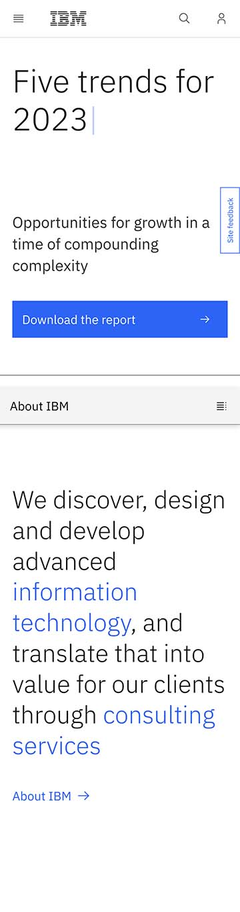

Visual Hierarchy
Adobe
adobe.com
Adobe uses visual hierarchy to draw your eyes to the possibilities within its site. Even though a banner is a larger item, Adobe places the logo image possibility larger than the banner. It is also placed first, where your eyes naturally go. The black with white lettering also stands out, ensuring that even though the free trial option is placed last, your eyes will be drawn back to it.
White space & Clean Design
IBM
ibm.com

IBM is a no-nonsense business site. They have chosen to use the advantage of white space, to draw the reader into just what is important on the page. The single blue button stands out first, with its bright color against the white backdrop. Then, your eyes head back to the five trends for 2023. The larger print below tries to entice you to keep scrolling.
Rule of Thirds
Squarespace
squarespace.com
Squarespace uses the rule of thirds to neatly divide their space into divided sections of interest. Their laptop and viewport images use the golden ratio to draw your eyes into the screen, from the top right, over to the far-left bottom corner and back again. Then, reversing it in the next example.